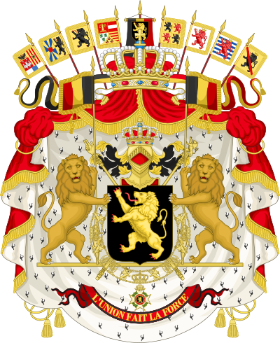
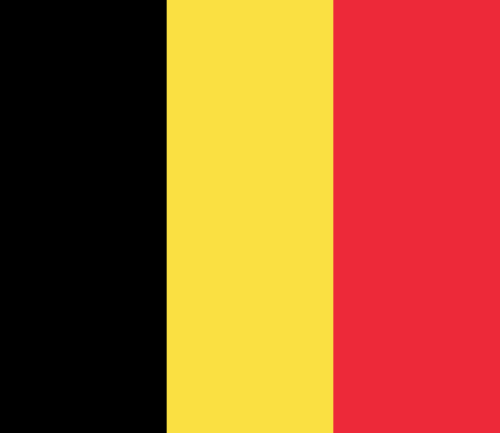

Герб Бельгии
На чёрном щите изображён золотой вздыбленный лев с красными когтями и высунутым красным языком (бельгийский лев). Над щитом расположен золотой шлем с поднятым забралом. На шлеме — великогерцогская корона. За щитом расположены скипетры: один с «рукой правосудия», другой со львом. Щит окружает золотая цепь ордена Леопольда. Львы, держащие щит, держат также и бельгийские знамёна на золотых древках. Внизу расположена красная лента. На ней золотыми буквами написан девиз «Единство даёт силу». Вся эта композиция помещена на мантию с золотой бахромой и кисточками, мантия подбита горностаем и увенчана великогерцогской короной. Над мантией подняты знамёна с гербами провинций Бельгии по состоянию на 1837 год (хотя количество провинций менялось, на гербе это не нашло отражения).

Флаг Бельгии
Флаг Бельгии представляет собой прямоугольное полотнище с соотношением сторон 13:15, состоящее из трёх равновеликих вертикальных полос — чёрной, жёлтой и красной. Эти цвета традиционно были цветами Брабантского Герцогства. Форма основана на форме флага Франции, хотя происхождение пропорций неизвестно.
Дата принятия — 23 января 1831 года. Вид флага утверждён статьёй № 193 бельгийской конституции, однако там приведён обратный принятому сейчас порядок цветов (то есть красный, жёлтый, чёрный)
Гимн Бельгии
Текст гимна был написан в сентябре 1830 года молодым французским революционером Женневалем, впервые его зачитавшим в брюссельском кафе «Aigle d’Or». Настоящим именем Женневаля было Луи Александр Деше́, он был актёром брюссельского театра «Ла-Монне», где в августе 1830 года началась бельгийская революция. Женневаль погиб 18 октября того же года в ходе войны за независимость.
Музыку к гимну в сентябре 1830 года написал Франсуа Ван Кампенгаут, бывший дирижёром в том же театре.
О дорогая Бельгия
О священная страна отцов
Наши душа и сердце преданы тебе.
Прими нашу силу и кровь наших вен,
Покажи нам цель в труде и борьбе.
Цвети, о страна, в нерушимом единстве;
Оставайся самой собой и оставайся свободной,
Верна девизу, который ты можешь говорить без страха:
За Монарха, за Свободу и за Право.
Верна девизу, который ты можешь говорить без страха:
За Монарха, за Свободу и за Право.
За Монарха, за Свободу и за Право.
За Монарха, за Свободу и за Право.
О Отчизна, о благородная страна бельгийцев.
Всегда сильная благодаря мужеству и трудолюбию,
Мир с восхищением смотрит на твоих детей,
Возглавляющих искусство, торговлю, промышленность.
Солнце свободы льёт свет на твои дороги,
И ты без страха смотришь в будущее.
Ты любишь своего монарха, который даёт тебе свою любовь,
Его рука ведёт тебя по дороге славы.
Ты любишь своего монарха, который даёт тебе свою любовь,
Его рука ведёт тебя по дороге славы.
Его рука ведёт тебя по дороге славы.
Его рука ведёт тебя по дороге славы.
Ликуйте бельгийцы, ликуйте в широком согласии
От Эсбе и до фламандских пляжей,
От севера к югу, по берегам Мааса и Шельды.
Ликуйте бельгийцы, ликуйте по всей стране
Мужской народ должен мочь петь по-мужски,
В то время как сердце стремится к благородной гордости.
У нас никогда не отберут наше сердце
До тех пор пока бельгиец — что фламандец, что валлон — живёт.
У нас никогда не отберут наше сердце
До тех пор пока бельгиец — что фламандец, что валлон — живёт.
До тех пор пока бельгиец — что фламандец, что валлон — живёт.
До тех пор пока бельгиец — что фламандец, что валлон — живёт.